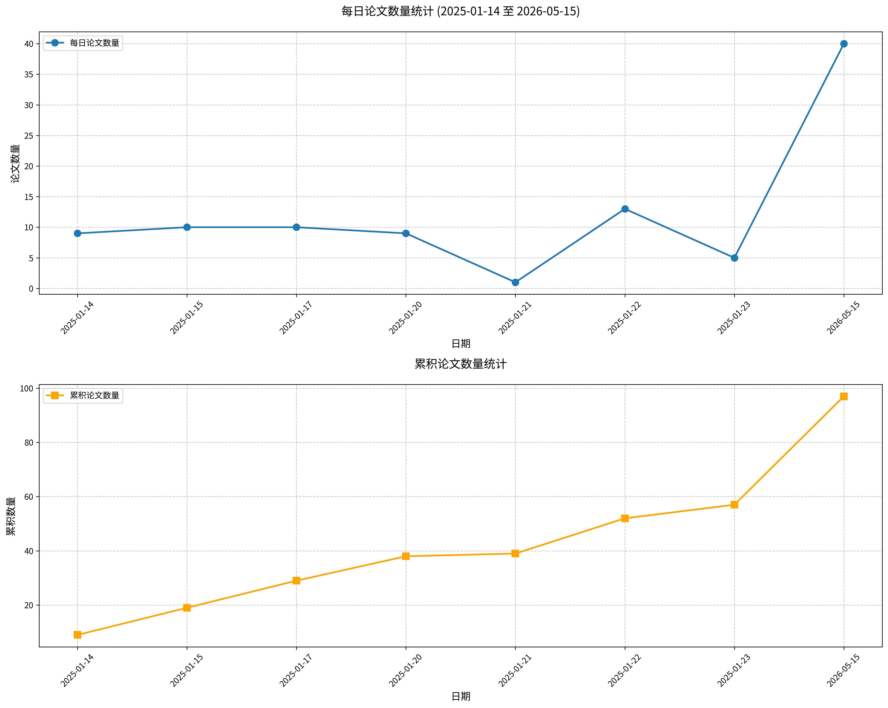

原文标题： Acute stress impairs attentional control and emotional processing in social anxiety.
摘要： 加工情绪面孔对社交焦虑个体构成特殊挑战。急性社会应激可能进一步改变注意分配与情绪加工，但这些变化的时间神经动态仍不清楚。我们采用脑电图（EEG），在应激诱导后通过注意威胁偏向任务和被动面孔观察任务，考察了注意偏向与面孔加工。结果显示，急性应激使持续性视空间注意偏向左侧视野，表明在竞争性情感刺激间重新分配注意的灵活性降低。应激还广泛降低了事件相关电位（ERP）波幅，并减弱了额叶α事件相关去同步化，提示注意资源可用性与皮层控制减弱。值得注意的是，对威胁面孔的早期快速反应保持完整。综合这些发现表明，急性应激通过耗竭持续性注意与调节参与所需的资源，重组了注意加工过程，可能加剧了社交焦虑中社会信息加工脆弱性。
关键词： 社交焦虑；急性应激；注意控制；情绪加工；事件相关电位
论文链接： PubMed
原文标题： NSUN5 Deficiency Drives Anxiety-Like Behaviors in Mice via Increased Microglial Activation and Impaired LTD Induction in the Basolateral Amygdala.
摘要： 威廉姆斯-贝伦综合征是一种神经发育障碍，其特征为焦虑、过度社交和神经认知异常，由染色体7q11.23杂合微缺失引起。胞嘧啶-5 RNA甲基转移酶NSUN5是缺失的基因之一，与WBS患者的认知缺陷相关。然而，NSUN5与焦虑障碍的关系及其潜在机制仍不清楚。本文报告称，NSUN5缺乏在成年雄性和雌性小鼠中均引发焦虑样行为，但不伴随过度社交。NSUN5在基底外侧杏仁核的少突胶质前体细胞中特异性表达，而BLA是与焦虑相关的主要脑区之一。此外，小鼠中NSUN5缺乏导致OPC增殖减少，同时伴随小胶质细胞活化。机制上，我们发现NSUN5缺乏小鼠中OPC源性成纤维细胞生长因子2（FGF2）分泌的特异性下降导致小胶质细胞活化，并加剧了TNFα和IL-1β细胞因子水平。NSUN5缺乏小鼠在外部囊BLA突触处的场兴奋性突触后电位斜率增加。此外，在NSUN5缺乏小鼠中观察到配对脉冲抑制增加和长时程抑制诱导受损，这些均可通过BLA内注射重组小鼠FGF2或通过米诺环素药理学抑制小胶质细胞活化来挽救。而且，NSUN5缺乏小鼠的焦虑样行为也通过rmFGF2或米诺环素治疗得到缓解。综上所述，本研究揭示了NSUN5在焦虑障碍中的先前未知作用，以及NSUN5在调节OPC-小胶质细胞相互作用和BLA突触可塑性中的角色。
关键词： 焦虑；小胶质细胞活化；长时程抑制；基底外侧杏仁核；NSUN5
论文链接： PubMed
原文标题： Predictive encoding of pain location in the motor system indexed by somatomotor alpha and corticospinal excitability.
摘要： 疼痛网络不仅必须对疼痛作出反应，还必须预测其发生，以主动引导防御性反应。然而，与疼痛相关的预测如何在神经系统中被学习和更新仍不清楚。通过一项巴甫洛夫威胁条件化任务，参与者学习了两种不同的视觉线索分别预测左臂或右臂会受到疼痛电击，而第三种线索则从不预测疼痛。习得后，线索-疼痛的关联被反转以评估预测更新。在疼痛预期期间（即线索呈现时），使用脑电图、皮肤电导反应和双线圈经颅磁刺激记录了神经和自主神经反应，以测量预期疼痛位置对侧和同侧的皮质脊髓兴奋性。我们发现，皮肤电导反应呈双侧增加且与预期疼痛位置无关，反映了自主神经系统的一种普遍性威胁准备状态。相比之下，体感运动alpha功率的抑制和皮质脊髓兴奋性的降低表现出侧化特征且功能上耦合，表明运动系统对预期疼痛位置进行了精确的调节。在反转阶段，前中央theta功率增加，支持了先前学习到的疼痛预测的更新。连接性分析进一步证实了这一点，揭示了体感运动与前中央振荡活动之间的动态交互。总之，这些发现表明疼痛预期由可分离但相互交互的网络支持，这些网络分别服务于普遍性威胁检测和情境敏感的防御反应，从而增进了对伤害感受神经认知机制的理解。
关键词： 疼痛预测，体感运动alpha，皮质脊髓兴奋性，威胁条件化，防御反应
论文链接： PubMed
原文标题： Dynamic brain network reconfiguration under stress: A multiphase fMRI study.
摘要： 急性压力在三个不同阶段（压力前、压力中和压力后）诱导神经资源的动态重新分配。尽管对孤立阶段已有广泛研究，但在理解这种资源重构如何塑造整个连续时间过程中大脑的动态特征方面仍存在关键空白。为解决这一问题，我们采用隐马尔可夫模型（HMM）在两个独立队列（ScanSTRESS任务，n=77，35名女性；蒙特利尔成像压力任务，n=48，24名女性）中跨所有阶段持续研究全脑网络动态。结果显示，两个队列中大规模脑网络均出现快速且可逆的时空重构，并伴随皮质醇水平升高。具体而言，从压力前到压力阶段观察到明显的脑网络时空重构，其特征为执行控制网络整体激活受到抑制，同时感觉处理增强，以及突显网络、感觉网络和执行网络之间的功能耦合增加。这些变化在压力后阶段逆转，且压力前与压力后阶段无显著差异。关键的是，我们发现了稳健的个体差异：在两个队列中，女性在压力期间表现出更高的状态切换频率，而较差的压力后恢复指数（与基线偏离较大）与更高的抑郁和焦虑评分相关。综合这些发现，我们提出一个三阶段网络重构模型，认为稳态是通过阶段特异性脑状态库和定向转换实现的。这一动态框架增进了我们对压力适应的理解，并为这些过程在压力相关精神病理学中如何失调提供了可检验的假设。
关键词： 压力；脑网络动态；隐马尔可夫模型；性别差异；情绪障碍
论文链接： PubMed
原文标题： Context-dependent variation in meerkat short note calls reflects emotional arousal.
摘要： 许多动物在不同情境下发出相同的叫声类型，但声学变异可以编码额外信息，例如发出者的情绪状态。通过这种方式，动物在可能有限的发声库中增强了沟通能力。猫鼬（Suricata suricatta）在不同行为情境下发出多种短叫声：晒太阳（即沐浴阳光）和哨兵行为（即合作警戒）。这两种情境可能在潜在的情绪唤醒上存在差异。我们首先研究了晒太阳和哨兵行为情境下心率是否不同，以指示唤醒状态的潜在差异。其次，我们检验了在晒太阳和哨兵行为期间发出的叫声在生产速率、叫声类型和声学结构上是否存在差异。我们给野生猫鼬植入了心率记录器，并记录其行为和发声。结果发现，哨兵行为与较高的心率和叫声速率相关，表明情绪唤醒增加。与晒太阳期间发出的叫声相比，哨兵行为期间发出的叫声的声学结构符合唤醒增加的预测，表现出更高的抖动度、更短的持续时间和更突然的起始。总体而言，我们的结果表明哨兵行为期间的情绪唤醒高于晒太阳期间，这反映在心脏活动、叫声速率和声学变异上。我们的研究强调，即使在简短、看似简单的发声中的声学变异也能增强信息传递量。
关键词： 情绪唤醒；声学变异；短叫声；猫鼬；情境依赖性
论文链接： PubMed
原文标题： How pattern of parental care and child emotional support predicts trajectories of depressive symptoms among Chinese middle-age and older adults.
摘要： 背景：晚年抑郁表现出异质性的发展轨迹。以往针对中国老年人群的研究已识别出不同的抑郁轨迹，但生命历程中家庭情感支持的影响仍未被充分探讨。本研究将代际情感互动模式概念化为早期父母关爱与成年子女情感支持的组合配置。本研究识别了晚年抑郁轨迹，并检验了这些模式是否预测中国老年人的抑郁轨迹。方法：利用中国健康与养老追踪调查（CHARLS）2011-2020年数据（n = 9888），采用潜在类别增长模型（LCGM）识别抑郁轨迹，使用潜在剖面分析（LPA）基于母爱、父爱及成年子女情感支持将参与者分为亚组。多项逻辑回归和卡方检验评估剖面与轨迹之间的关联。结果：出现四种抑郁轨迹：“无抑郁”（56.3%）、“恶化”（22.4%）、“缓解”（12.3%）和“慢性抑郁”（9.1%）。发现三种不同的代际情感互动模式：“情感继承”（40.7%）、“情感补偿”（17.4%）和“情感错配”（41.9%）。“情感继承”组在“无抑郁”轨迹中占比过高，而“情感补偿”组被归类为“恶化”和“慢性抑郁”轨迹的风险较高。结论：代际情感互动模式与晚年抑郁症状轨迹独立且联合相关。早期儿童期高父母关爱与持续来自子女的情感支持对心理健康的保护作用最强。相反，低父母关爱——即使后期获得情感支持补偿——也与更差的心理健康结果相关。
关键词： 抑郁症状轨迹；代际情感互动；父母养育；情感支持；中国中老年人
论文链接： PubMed
原文标题： When empathy feels scarce: How zero-sum beliefs fuel depression in close relationships.
摘要： 本研究探讨了零和信念（即认为情绪资源有限）如何影响个体在日常浪漫互动中的情绪体验。通过经验取样法和双人设计，我们收集了198对异性浪漫伴侣（共396人）的数据，在14天内获得了5280个有效的日常观察记录。我们研究了个体的零和信念如何通过两条路径影响自身及伴侣的日常抑郁情绪：减少共情投入，以及增强对感知到的共情不平衡的敏感性。结果显示，持有更强零和信念的个体倾向于向伴侣提供更少的共情，并且更容易体验到共情权衡，这两者均预测了抑郁情绪的升高。值得注意的是，男性零和信念与女性伴侣较低的抑郁情绪意外相关，提示可能存在一种适应性的脱离机制。这些发现将零和信念研究的理论范围扩展到亲密关系中，并强调了人际信念系统在塑造情绪健康中的作用。理解个体如何认知性地构建共情，可能为开发针对性干预措施以缓解情绪压力及促进关系福祉提供关键见解。
关键词： 零和信念；共情；抑郁；亲密关系；情绪体验
论文链接： PubMed
原文标题： PTSD symptoms moderate the effects of interpretation bias modification on hostile interpretation bias and trait anger.
摘要： 愤怒水平较高的个体倾向于将模糊情境解读为具有敌意，从而维持其愤怒情绪。重要的是，敌意解释偏向和愤怒均与不良后果（如物质使用障碍和自杀）相关。研究发现，敌意解释偏向修正（IBM-H）能有效减少敌意归因偏向，但其对愤怒的减轻效果结果不一。可能影响这些结果的一个因素是与敌意解释偏向和愤怒均相关的创伤后应激障碍（PTSD）症状。本研究在愤怒水平较高的创伤暴露吸烟者样本中（N=76），考察了PTSD症状作为IBM-H效果潜在调节变量的作用。将IBM-H与健康与放松视频对照组进行比较。在基线PTSD症状较高（即+1个标准差）的参与者中，与对照组相比，IBM-H组治疗后特质愤怒显著降低，而在PTSD症状较低的个体中，条件对愤怒无显著影响。此外，在PTSD症状较高的个体中，敌意解释偏向的变化完全中介了IBM-H对愤怒的影响。这些初步证据表明，针对愤怒的IBM-H可能对PTSD症状较高的个体最有效。然而，由于样本由希望戒烟的创伤暴露吸烟者组成，这些发现的普适性有限。未来研究应考察IBM-H对PTSD患者（包括吸烟者和非吸烟者）愤怒的疗效，以及对物质使用障碍、抑郁和PTSD症状等次要结局的影响。
关键词： 敌意解释偏向修正；创伤后应激障碍；特质愤怒；情绪调节；社会认知
论文链接： PubMed
原文标题： Sex-dependent disruption of affective behaviors by GBR 12909: relevance to bipolar disorders.
摘要： 双相情感障碍（BD）以躁狂和抑郁阶段的慢性复发为特征。除了情绪波动外，急性阶段还伴有情感改变。这些变化的生物学基础尚未明确，主要因为模拟BD的循环特性在临床前研究中仍是一项重大挑战。一种药理学模型基于多巴胺转运体抑制剂GBR 12909给药，旨在模拟躁狂的某些维度。最新发现表明，该模型产生混合表型，将高活动性与负性快感缺失偏向和焦虑结合在一起。这些研究仅在雄性动物中进行，而与BD相关的其他行为维度仍有待探索，特别是对同种个体情绪状态的识别和对危险的反应性。本研究的目的是通过引入两种新的行为测试——横扫/逼近圆盘任务和负性情绪识别任务，评估对威胁的反应和情绪辨别，进一步在两种性别的小鼠中表征GBR模型。首先，我们在GBR模型中复制了先前的结果：雄性小鼠表现出更高的焦虑、高活动性和快感缺失。这些表型在雌性小鼠中不太明显且未达到显著性。GBR还诱导两种性别小鼠在横扫/逼近圆盘任务中对威胁出现超敏感性。仅在雄性小鼠中，GBR消除了对情绪目标的偏好，表明情绪识别发生改变。这项工作引入了与BD研究相关的新表型维度，并强调了研究两种性别的必要性，因为它们在行为反应上并非完全等同。
关键词： 双相情感障碍；情感行为；性别差异；情绪识别；GBR 12909
论文链接： PubMed
原文标题： Attentional biases in women with postpartum depressive symptoms: A comparative eye-tracking study.
摘要： 背景：产后抑郁与情绪加工的改变有关，然而对婴儿情绪表达的注意偏向仍知之甚少且研究结果不一致。本研究考察了有产后抑郁症状的母亲与无症状母亲及无抑郁非母亲群体在观看情绪性婴儿和成人面孔时的视觉注意差异。 方法：研究对象包括26名有产后抑郁症状的母亲、30名无症状母亲和21名无抑郁非母亲。参与者完成了一项自由观看眼动任务，呈现情绪性（快乐、愤怒、悲伤）和中性面孔（包括婴儿和成人）。通过线性混合模型分析初始定向和注意维持的指标。 结果：有产后抑郁的母亲对快乐婴儿面孔的定向速度均快于两个对照组，但这种早期偏向并未伴随着更强的持续注意。产后抑郁症状严重程度与对婴儿悲伤的较慢定向呈边缘显著相关。在后期阶段，有产后抑郁的母亲对婴儿悲伤的回避减少，并对愤怒婴儿表情的持续注意增强。较高的产后抑郁得分与对婴儿和成人面孔负性表情的更大注意维持相关。对于成人刺激，有产后抑郁的母亲对负性表情的持续注意增强，对正性表情的加工减少，而无产后抑郁的母亲和非母亲则优先关注快乐面孔。 结论：产后抑郁与一种动态的、情境依赖的注意模式相关，而非统一的偏向。尽管对成人面孔的注意加工符合抑郁的认知模型，但对婴儿面孔的反应则反映了一种更复杂的模式：早期对积极刺激的定向结合随后被消极线索捕获的过程。
关键词： 产后抑郁；注意偏向；眼动追踪；婴儿表情；情绪加工
论文链接： PubMed
原文标题： An exploratory randomized controlled trial of an AI-enabled mental health intervention for generalized anxiety.
摘要： 广泛性焦虑障碍（GAD）普遍存在，且常与抑郁共病，导致显著的功能残疾和医疗负担。虽然认知行为疗法（CBT）和选择性5-羟色胺再摄取抑制剂（SSRIs）等治疗有效，但可及性仍然有限。本探索性随机对照试验评估了一款基于人工智能的心理健康应用程序（PATH）在减轻焦虑和抑郁症状方面的有效性。共有316名英国参与者（年龄19-70岁）被随机分配至干预组（PATH）或对照组（NHS自助网站）。干预措施提供了基于证据的策略，包括CBT指导的聊天疗法和交互式工具。在基线、两周、八周和十二周时测量焦虑（GAD-7）和抑郁（PHQ-9）评分。在316名随机参与者中，235名完成了干预期后评估（干预组流失率33.0%，对照组18.5%）。八周和十二周随访的保留率分别为77.4%和54.0%。两周时，干预组的GAD-7和PHQ-9评分显著低于对照组，效应量为中等。八周时，继续使用该应用程序的参与者在焦虑和抑郁方面均显示出显著改善，而停用者仍在焦虑方面表现出中等改善。效果在十二周时得以维持，效应量为中到大。研究结果表明，PATH能显著减轻焦虑和抑郁症状，尤其在持续使用时效果更佳。这些结果支持该应用程序作为一种可扩展、可获取的数字干预手段，以弥补心理健康治疗缺口。
关键词： 人工智能，广泛性焦虑障碍，情绪，数字干预，随机对照试验
论文链接： PubMed
原文标题： Association between striatal gray matter volume and suicidal ideation in patients with major depressive disorder: Evidence from the REST-meta-MDD project.
摘要： 背景：自杀意念是重性抑郁障碍的常见并发症，但其神经机制仍不清楚。重性抑郁障碍患者的纹状体存在异常，可能作为自杀意念的生物标志物。本研究旨在探讨灰质体积作为自杀意念生物标志物的潜力，目前尚无类似研究。方法：基于REST-meta-MDD项目，本研究纳入235名健康对照和246名重性抑郁障碍患者，其中123人有自杀意念，123人无。我们使用双样本t检验和皮尔逊相关分析磁共振成像数据。通过1000次排列和阈值自由簇增强校正进行多重检验校正。抑郁症状使用17项汉密尔顿抑郁量表评估。结果：重性抑郁障碍患者右侧纹状体的灰质体积显著小于健康对照。有自杀意念的重性抑郁障碍患者右侧纹状体灰质体积高于无自杀意念者，且在多重协变量调整后差异仍显著。双侧纹状体灰质体积与自杀意念相关，所有簇中自杀意念相关灰质体积均纳入回归方程。结论：本研究表明纹状体灰质体积与自杀意念存在统计显著相关，提示该结构特征可能对研究重性抑郁障碍患者的自杀意念有价值。
关键词： 自杀意念，重性抑郁障碍，纹状体，灰质体积，磁共振成像
论文链接： PubMed
原文标题： Effects of aerobic exercise on depression-like behaviors and hippocampal transcriptomics in CSDS-induced adolescent mice.
摘要： 背景：青春期是易患抑郁症的关键时期，然而运动抗抑郁效果的大多数证据来自成年模型。本研究旨在探讨有氧运动对青春期抑郁小鼠模型的影响，并识别其相关的分子变化。方法：在青春期雄性C57BL/6J小鼠中建立慢性社交挫败应激模型以诱导抑郁样行为。将36只小鼠随机分为三组：对照组、模型组和模型加运动组。模型组和模型加运动组小鼠接受两周的慢性社交挫败应激（第7-20天），而模型加运动组小鼠在整个慢性社交挫败应激期间（第0-20天）额外接受三周的跑台有氧训练。在第21-26天进行行为测试，随后收集血清和海马组织进行分子、组织学和转录组学分析。结果：慢性社交挫败应激在青春期雄性小鼠中诱导了显著的抑郁样行为，包括社交回避、快感缺失和行为绝望，这些症状均被有氧运动有效缓解。有氧运动似乎减轻了慢性社交挫败应激诱导的神经损伤并维持了海马组织完整性。此外，有氧运动增加了血清中血清素的水平。转录组学分析识别出587个差异表达基因。在这些基因中，有59个重叠的差异表达基因受到慢性社交挫败应激和运动的共同调控，并富集于碳水化合物代谢和胆碱能信号通路。结论：有氧运动缓解了青春期雄性小鼠的抑郁样行为，可能通过调节海马基因表达——尤其是胆碱能和碳水化合物代谢通路——这为运动如何影响外周单胺水平及海马结构完整性提供了潜在线索。这些假设机制需要进一步研究。
关键词： 有氧运动；青春期小鼠；抑郁样行为；海马转录组学；慢性社交挫败应激
论文链接： PubMed
原文标题： Prediction models for longitudinal trajectories of depression and anxiety: a systematic review.
摘要： 背景：预测非典型健康轨迹可能有助于早期干预。我们系统回顾了关于预测纵向抑郁和/或焦虑轨迹模型的现有文献。方法：检索了MEDLINE、Embase和APA PsycINFO数据库（从建库至2025年1月31日）。我们纳入了针对儿童和成人（3-65岁）的基于人群的研究。使用预测模型偏倚风险评估工具（PROBAST-AI）评估偏倚风险。结果：九项纳入研究中有七项针对基线诊断为抑郁或焦虑的成人人群；两项聚焦于儿童和青少年人群。仅有一项研究包含了焦虑轨迹。识别出的轨迹通常包含三到四组，包括：慢性/持续-高、稳定-低、加重/恶化、改善/缓解组。使用了多种有监督预测建模方法。模型中包含的最终预测因子数量从3个到152个不等。家族史和自身/个人精神病史是最常见的预测因子，但并不总是对模型表现重要。包含更多预测因子的模型并不总是表现更好。所有研究的总体偏倚风险均较高。没有研究进行外部验证，也没有研究评估模型的临床实用性。结论：本综述强调需要稳健且经过验证的模型，以预测持续性或恶化性焦虑和抑郁的未来风险，尤其是在能够进行早期干预的年轻人中。
关键词： 抑郁轨迹；焦虑轨迹；预测模型；系统综述；早期干预
论文链接： PubMed
原文标题： Right orbitofrontal cortex rTMS targets anxiety, not depressive, symptoms in first-episode schizophrenia.
摘要：
背景：焦虑在首发精神分裂症（FES）中高度普遍但治疗不足，而针对这一共病状况的重复经颅磁刺激（rTMS）数据较为稀缺。眶额皮层（OFC）是一个关键的焦虑调节节点，支持其作为潜在刺激靶点的可行性。本研究旨在探索1-Hz右侧OFC-rTMS对FES情绪症状的特异性效应。
方法：本研究是一项随机对照试验的二次分析。参与者为未用药的FES患者，随机分配至活性rTMS组（n=51）或假刺激组（n=45）。所有受试者完成20次干预（活性组接受20次OFC-rTMS，假刺激组接受20次假刺激），并进行4周随访，首次rTMS治疗同步开始口服奥氮平（10-20 mg/天）。情绪症状采用24项汉密尔顿抑郁量表（HAMD）和14项汉密尔顿焦虑量表（HAMA）评估，精神病理症状采用阳性与阴性症状量表（PANSS）评估。主要结局指标为从基线到第2周和第4周HAMD与HAMA评分的变化。
结果：与假刺激组相比，活性组在PANSS总分（t=-3.260，p=0.002；Cohen's d=0.672）及各分量表上均表现出更大改善。重复测量方差分析（控制协变量）显示，HAMA总分（F=4.698，p=0.010；偏η²=0.059）和精神性焦虑（F=5.735，p=0.004；偏η²=0.072）存在显著的时间×组别交互作用，但躯体性焦虑无此效应。针对HAMD，仅焦虑/躯体化（F=8.397，p=0.031；偏η²=0.099）和认知障碍（F=6.240，p=0.002；偏η²=0.076）存在交互作用，整体抑郁症状无特异性效应。假刺激组中，HAMD焦虑/躯体化得分与PANSS所有分量表显著相关（r=0.311-0.477，p<0.05），但活性组中该相关性消失（所有p>0.05）。
结论：右侧OFC-rTMS可改善FES患者的焦虑症状（而非抑郁症状），支持其作为一种靶向非药物选择。
关键词： 首发精神分裂症；焦虑；重复经颅磁刺激；眶额皮层；情绪症状
论文链接： PubMed
原文标题： Associations between early-life unpredictability and mental health during the Israel-Hamas war.
摘要： 暴露于战争会增加情绪和心理困扰的风险，尤其是在已有脆弱性的人群中。根据发展和精神病理学的生命史模型，生命最初几年经历的不预测性应预示着成年期对情绪失调和心理症状的更大脆弱性。此外，敏感化假说认为，这种效应在当前压力环境中应尤为明显。本研究调查了2023年10月7日开始的以色列-哈马斯战争前后，成年以色列犹太人的情绪失调和心理困扰轨迹，以及早期生活不可预测性的调节作用。参与者（N = 720）在战前评估两次，并在战争前六个月内评估两次。每次评估中，他们完成了情绪失调（DERS-18）和一般心理困扰（SCL-10R）的测量。早期生活不可预测性的回顾性报告在T1收集，涉及生命的前10年。多层模型表明，战争开始后心理困扰和情绪失调相互依赖地增加。早期生活不可预测性与战前更大的心理困扰和情绪失调相关，并与战后心理困扰的更大增加相关。此外，在暴露于战争的个体中，早期生活不可预测性与心理困扰的更大增加相关。这些发现表明，以色列-哈马斯战争对以色列成年人造成了情绪和心理负担。它们进一步表明，早期生活不可预测性是成年期情绪失调和心理困扰的一般风险因素，并预测暴露于战争的个体更差的心理健康。
关键词： 早期生活不可预测性；情绪失调；心理困扰；战争暴露；心理健康
论文链接： PubMed
原文标题： The relationship between childhood trauma, inhibitory dysfunction, and emotion processing: Exploring differences across social anhedonia levels.
摘要： 背景：童年创伤对个体的认知和情绪问题具有广泛的不利影响，然而其潜在的心理机制尚不清楚。本研究旨在探究童年创伤、抑制功能障碍与情绪加工之间的关系，并探讨不同社会快感缺失水平的群体在这些关联中的潜在差异。方法：我们对1622名健康参与者进行了多组自我报告测量，以获取童年创伤、愉悦体验、情绪调节以及执行功能方面的数据。采用偏相关网络和节点中心性进行分析，检验抑制功能障碍在童年创伤与情绪加工关系中的中介效应。此外，根据社会快感缺失水平将参与者分为三组（高、中、低），进行网络比较检验及各组的中介效应分析。结果：网络分析显示，童年创伤与认知重评和愉悦体验呈负相关，与表达抑制呈正相关。抑制功能障碍显著中介了童年创伤与情绪调节之间的关系。亚组分析表明，仅在低社会快感缺失组中发现抑制功能障碍显著中介了童年创伤与认知重评的关系，而在中、高社会快感缺失组中不显著。结论：本研究表明，抑制功能障碍在童年创伤与情绪调节之间起重要作用，而这一作用在中高社会快感缺失水平的个体中被破坏。这些发现强调了在针对创伤相关情绪问题制定干预措施时考虑抑制功能的必要性。
关键词： 童年创伤；抑制功能障碍；情绪加工；社会快感缺失；情绪调节
论文链接： PubMed
原文标题： Alcohol misuse as dysfunctional affect regulation: a network analysis of psychopathology across adulthood.
摘要： 背景：酒精滥用日益被理解为一种适应不良的情绪调节形式。本研究使用网络分析模型，在一个奥地利成年人代表性样本中探讨酒精滥用、心理健康症状和年龄之间的相互作用。方法：数据来自2007名参与者（49%为女性；平均年龄48.2±16岁），在年龄、性别、联邦州和教育水平方面代表奥地利一般人群。使用经过验证的工具进行分析：酒精滥用采用CAGE问卷，抑郁采用PHQ-9，焦虑采用GAD-7，失眠采用ISI-7，压力采用PSS-4。通过正则化高斯图模型进行网络分析，以探索这些变量与年龄之间的相互关系。评估了中心性、稳定性和基于性别的网络比较。结果：总体而言，21%的参与者酒精滥用筛查呈阳性（CAGE≥2）。双变量分析显示，疑似酒精依赖的个体报告更高水平的抑郁、焦虑、压力和失眠，且年龄更年轻。正则化网络分析揭示了酒精滥用与抑郁症状之间的强关联。抑郁和焦虑成为网络中的核心节点，而年龄与酒精滥用和精神病理负担均呈负相关。未发现网络结构或整体强度存在显著的性别差异。结论：研究结果支持将酒精滥用视为一种功能失调的情绪调节策略，特别是在与抑郁症状的关系中。这些发现与情绪失调的跨诊断模型一致，并强化了针对情绪调节技能的预防性干预需求，尤其是在年轻成年人和存在共病心理健康问题的个体中。
关键词： 酒精滥用；情绪调节；网络分析；抑郁；精神病理
论文链接： PubMed
原文标题： Quality of engagement with in-the-moment digital CBT during periods of distress: A study of patients with suicidal thoughts and behaviors.
摘要： 在治疗会话之外实践CBT技能是有效治疗的核心组成部分，但在心理痛苦升高期间，有意义的参与可能变得困难。基于智能手机的生态瞬时干预（EMIs）为支持实时技能使用提供了一种有前景的方法，但大多数研究关注的是参与频率而非参与质量。本研究考察了住院出院后28天基于智能手机的EMI中CBT技能实践的质量，并探讨了其与内部情境和干预效果的关联。23名因自杀念头和行为住院的成年人参与研究，每天最多三次从三种引导式CBT技能练习（正念情绪意识、对抗情绪行为或认知灵活性）中选择并实践其中一项。使用结构化编码系统对总计945次练习的完整性和相关性进行评分（0-2分制）。质量主要在个体内部存在差异，并且在自杀意图和冲动高涨的时刻较低。当综合所有技能时，质量与近端变化无关联。然而，更高质量的对抗情绪行为实践预测了自杀意图的更大程度降低，而更高质量的对抗情绪行为和认知灵活性实践预测了愤怒情绪的更大程度降低。这些发现表明，瞬时痛苦可能影响参与质量，技能实践的短期效果可能取决于具体的CBT策略和目标痛苦类型。理解和提升参与质量是优化针对心理痛苦个体的移动干预措施的关键步骤。
关键词： CBT技能实践；参与质量；生态瞬时干预；自杀念头与行为；情绪调节
论文链接： PubMed
原文标题： Intolerance of uncertainty and depression in children and adolescents: Systematic review and meta-analysis.
摘要： 背景：不确定性不耐受（IU）是抑郁和焦虑发生与维持的因素。以往综述发现其与儿童青少年焦虑相关，但当时缺乏足够证据来评估该群体中IU与抑郁的关联。方法：确定了20项研究儿童青少年IU与抑郁关系的研究。采用随机效应元分析汇总横断面关联，并以年龄、性别和测量工具为调节变量。对相关研究（K=6）的纵向发现进行了叙述性综述。结果：横断面关联的元分析发现总体效应量为r=0.47。年龄或性别调节效应的证据有限，但测量工具存在显著的调节效应。具体而言，当纳入使用“儿童友好型”测量工具（即针对儿童而非成人开发并标准化）的研究时，效应量为r=0.37。另一分析显示，抑制性IU分量表与抑郁的关联强于预期性IU。纵向发现表明IU与抑郁的关联随时间持续存在。局限：研究仅限于英文发表且包含普通人群样本（如典型发育、无重大医疗需求）。结论：儿童青少年IU与抑郁症状之间存在中强关联，但使用非儿童友好型IU测量工具可能高估此关联。未来研究可通过审慎选择测量工具以及采用纵向和实验设计来进一步拓展证据基础。
关键词： 不确定性耐受；抑郁；儿童；青少年；元分析
论文链接： PubMed
原文标题： Sociodemographic and clinical predictors of digital mental health intervention engagement among treatment-seeking psychiatric outpatients.
摘要： 背景：数字心理健康干预在改善抑郁、焦虑和精神困扰方面展现出前景，但现实世界中的参与度仍然较低。提高参与度有巨大潜力来增强数字心理健康干预的效果，但对于自然环境中参与度驱动因素的了解甚少。为了更好理解参与度的预测因素，我们在一个大型成人临床样本中考察了与数字心理健康干预使用相关的社会人口学和临床特征。 方法：1223名成年人（74%白人，68%女性，平均年龄36.8岁），已预约精神科门诊服务，被随机分配到基于正念的应用程序或基于认知行为疗法的应用程序。使用数据被自动收集，参与者未被要求或补偿使用这些应用程序。 结果：参与者使用其分配的数字心理健康干预的中位天数为8天，88.2%的参与者至少使用过一次。参与者使用正念应用程序的天数比认知行为疗法应用程序多两倍以上[发病率比（95%置信区间）=2.4（2.1, 2.7）]。女性、白人种族、大学学历以及60岁以下的年龄预测了更高的参与度。此外，对于分配到正念应用程序的参与者，抑郁严重程度与参与度呈非线性关系，在轻微/轻度症状和重度症状时参与度低于中度症状和中重度症状。 结论：这些发现表明，基于社会人口学和临床特征，不同数字心理健康干预之间存在有意义的参与度差异。通过定制数字心理健康干预产品，特别是强调满足参与度较低人群的需求，可能存在提高参与度的机会。
关键词： 数字心理健康干预；参与度；社会人口学预测因素；情绪；抑郁
论文链接： PubMed
原文标题： The association between high-density lipoprotein cholesterol and depressive symptoms: The moderating role of inflammation.
摘要： 抑郁症是一种严重的精神障碍，且越来越多的研究关注其与心血管健康之间的双向联系。从这一综合视角来看，高密度脂蛋白胆固醇和C反应蛋白（一种全身性炎症标志物）可作为连接这两种状况的生物基础。以往关于抑郁症与HDL-C的研究报告结果不一致，很可能是因为抑郁症常被作为一个单一状况处理，而未考虑其多样化的症状维度。此外，虽然有研究报道炎症会影响HDL-C与抑郁症之间的整体关联，但炎症在特定抑郁症状中的作用仍不清楚。因此，本研究利用美国国家健康与营养调查数据，构建网络模型分析HDL-C与抑郁症状之间的关系，并考察CRP水平的调节效应。结果表明，HDL-C与悲伤和精神运动性改变呈负相关，与低自尊呈正相关。此外，随着炎症水平升高，HDL-C与快感缺失和死亡念头之间的关联趋向负相关，而与食欲改变的关联则转向正相关。我们的发现表明，HDL-C与抑郁症之间的关系具有症状特异性，并部分受炎症环境调节，为理解抑郁症与心血管疾病共同的生物学基础提供了症状层面的证据。
关键词： 抑郁症状；高密度脂蛋白胆固醇；炎症；症状特异性；网络模型
论文链接： PubMed
原文标题： Prefrontal activation and inhibitory performance in the association between anxiety and sleep quality: An fNIRS investigation.
摘要： 背景：焦虑与睡眠障碍密切相关，但其潜在的神经和认知关联尚不明确。本研究在临床背景下考察了前额叶皮层激活和抑制表现在此关系中的作用。方法：共有181名参与者，包括91名焦虑障碍患者和90名年龄与性别匹配的健康对照者，完成了Zung氏焦虑自评量表、匹兹堡睡眠质量指数以及颜色-词汇Stroop任务。使用功能性近红外光谱测量任务期间的前额叶激活。结果：与健康对照者相比，焦虑障碍患者的睡眠质量更差、反应时间更长、抑制准确性更低、前额叶激活减弱（所有p < 0.001）。两组在任务相关的功能连接性上无显著差异（p = 0.94）。焦虑与较差的睡眠质量（r = 0.76，p < 0.001）和抑制表现受损（r = 0.46，p < 0.001）呈正相关，与前额叶激活呈负相关（r = -0.6至-0.2，p < 0.05）。较差的睡眠质量与抑制缺陷呈正相关（r = 0.5，p < 0.001），与前额叶激活呈负相关（r = -0.59至-0.19，p < 0.05）。序列中介分析显示，背外侧前额叶皮层激活和抑制表现依次中介了焦虑与睡眠质量之间的关系。结论：我们的发现提示，背外侧前额叶皮层激活和抑制控制构成了连接焦虑与睡眠质量的神经认知通路。因此，增强抑制功能的干预措施可能改善焦虑障碍患者的睡眠质量和整体功能。
关键词： 焦虑；睡眠质量；前额叶激活；抑制表现；功能性近红外光谱
论文链接： PubMed
原文标题： Depressive and anxiety symptoms in individuals with Long-COVID: Does social network matter? - Results of a German Long-COVID study.
摘要： 背景：一些既往感染SARS-CoV-2的患者会发展为被称为“长新冠”（LC）的症状。关于社会特征如何影响长新冠成人患者的抑郁和焦虑症状，目前证据有限。 方法：采用流行病学研究中心抑郁量表（CES-D）评估抑郁症状，采用广泛性焦虑障碍量表（GAD-7）评估焦虑症状。通过单一问题评估居住状况（独居或与人同住）。使用Lubben社会网络量表（LSNS）评估社会网络。进行了多元回归分析。 结果：在来自德国莱比锡的410名长新冠参与者（平均年龄=47.12，标准差=12.24）中，我们发现与人同住与独居相比，与更少的抑郁症状相关（B=-2.18，p=0.011）。在长新冠症状成人中，较大的社会网络与更少的焦虑症状相关（IRR=0.99，p=0.008）。 结论：社会因素（如社会网络和居住状况）与长新冠成人患者的心理健康因素（如抑郁和焦虑症状）相关。未来需要在纵向研究中进一步阐明长新冠患者社会因素与心理健康之间的复杂相互作用，并讨论了未来的研究方向。
关键词： 长新冠；抑郁症状；焦虑症状；社会网络；心理健康
论文链接： PubMed
原文标题： Predictors of momentary emotion differentiation among veterans in residential treatment for posttraumatic stress disorder: An ecological momentary assessment study.
摘要： 情绪差异化指个体描述自身情绪体验的精确性。低情绪差异化与情感障碍相关，但在创伤后应激障碍（PTSD）中研究不足，尽管其症状广泛涉及情感失调（如回避创伤相关情绪）。此外，尽管情绪差异化被视为可通过心理治疗改善的技能，但此前主要作为特质而非即时构念进行研究，限制了对情境因素的理解。本研究采用多层模型，对63名接受住院PTSD治疗的美国退伍军人进行每日五次、平均持续30天的生态瞬时评估（EMA），考察即时负性情绪差异化（NED）与正性情绪差异化（PED）的预测因素。预测变量包括初始PTSD严重程度（临床访谈测得）、治疗时间（入院后天数）及服务犬的存在（治疗项目的独特组成部分），协变量为平均负性情绪或正性情绪。在控制平均情绪后，PTSD严重程度与更低的即时NED和PED相关，提示其可作为潜在治疗靶点。治疗时间未持续成为预测因素，可能因EMA发生在治疗后半段。服务犬的存在与更高的即时PED相关，这与既往发现个体在更熟悉（对比不熟悉）情境中即时PED更高的结果一致。未来需进一步阐明PTSD干预在促进情绪差异化方面的时间进程与类型。
关键词： 情绪差异化；创伤后应激障碍；生态瞬时评估；退伍军人；服务犬
论文链接： PubMed
原文标题： Psychological and mental states mediated the association between physical activity and self-rated health of Chinese centenarians.
摘要： 目的：基于全球规模最大且最新的百岁老人数据库——中国海南百岁老人队列研究，本研究旨在探索日常生活活动能力与自评健康之间的关联，并分析影响二者相互作用的介导因素。本研究将揭示百岁老人的健康状况，为改善老年人群的健康指导和医疗服务提供研究基础。方法：本研究共纳入992名百岁老人，通过问卷调查、体格检查和生物检测收集数据。结果：性别、体重指数、低密度脂蛋白胆固醇和简易精神状态检查与ADL和SRH呈正相关，而空腹血糖和老年抑郁量表-15与ADL和SRH呈负相关（所有P值均<0.05）。ADL与SRH的总关联度为0.2500（95%置信区间：0.1960-0.3039），直接关联度为0.1437（95%置信区间：0.0885-0.1989），总间接关联度为0.1063（95%置信区间：0.0807-0.1347；所有P值均<0.001）。GDS-15和MMSE是ADL与SRH的介导因素，其介导关联度分别为0.0636（95%置信区间：0.0430-0.0866）和0.0326（95%置信区间：0.0182-0.0479）。结论：百岁老人的ADL与SRH存在直接关联，并通过心理和精神状态介导的间接关联。因此，老年人群若想成为健康百岁老人，不仅应关注维持和改善体力活动，还不能忽视心理和精神状态的作用。
关键词： 百岁老人；自评健康；日常生活活动能力；心理状态；精神状态
论文链接： PubMed
原文标题： Emotional dysregulation and psychological symptomatology in university students: The mediating role of perceived academic performance.
摘要： 目的：本研究旨在考察意大利大学生的心理症状，通过检验学业表现感知在情绪失调与多种心理健康结果（包括幸福感、症状、功能及风险）之间的中介作用。方法：2025年3月至7月间，来自基耶蒂-佩斯卡拉大学的1134名学生完成了一项在线调查。测量工具包括情绪调节困难量表简版（DERS-SF）、常规评估临床结局-结局测量（CORE-OM）以及一项评估学业表现感知的12题量表。采用Jamovi软件进行路径分析，使用最大似然估计法检验假设的中介模型。结果：情绪失调与学业表现感知呈负相关，与心理症状各维度呈正相关。学业表现感知与幸福感、症状、功能及风险均显著相关。间接效应表明，学业表现感知部分中介了情绪失调与心理结局之间的关系，解释了心理症状总变异的54%。结论：研究结果表明，大学生情绪失调与心理症状密切相关，且学业表现感知在这一关系中既作为结果变量又作为中介变量，强调了其在学生群体情绪失调模型中的重要性。
关键词： 情绪失调；心理症状；学业表现感知；中介作用；大学生
论文链接： PubMed
原文标题： Visual cortical functional connectivity alterations and their associations with psychotic symptoms in early-onset bipolar disorder.
摘要： 背景：视觉皮层功能障碍已被证实与精神病性症状的早期阶段相关。然而，早发型双相障碍（EOBD）患者视觉区域的功能连接（FC）仍知之甚少。本研究旨在探讨EOBD中视觉相关FC的改变及其与精神症状和临床特征的关联。方法：对88名EOBD患者和56名健康对照（HCs）进行静息态功能磁共振成像。通过概率视觉图谱选取种子点，比较两组间基于25个种子点的FC差异。采用多重比较校正的偏相关分析，探究EOBD中FC改变与精神症状的关联。结果：与HCs相比，14个视觉皮层种子点与额叶及后颞叶区域的FC增高，而5个视觉皮层种子点与颞叶及感觉运动相关区域的FC降低。较高的精神病性阳性、阴性及一般症状评分，与视觉和额叶区域（特别是右侧外侧枕叶复合体1区、2区、人类中颞视觉区、顶内沟5区、中央前回和额上回）的FC增高显著相关。结论：EOBD患者表现出视觉系统连接性的改变，特征为与额叶的FC增高，以及与感觉运动及情绪调节相关区域的FC降低。这些发现提示视觉相关FC异常可能在双相障碍早期病程中出现，并与精神病性症状相关，可能作为精神病性易感性的早期标志物。
关键词： 早发型双相障碍；视觉皮层；功能连接；精神病性症状；静息态功能磁共振
论文链接： PubMed
原文标题： Depressive symptoms status and nighttime sleep duration in relation to cognitive performance in Chinese elderly: Insights from a large cross-sectional inquiry.
摘要： 背景：夜间睡眠时间与抑郁症状对老年人认知功能（通过简易精神状态检查量表MMSE评估）的联合影响尚不明确，其机制路径及睡眠时间与认知的非线性关系也未被充分表征。本研究探讨了社区居住的中国老年人中，抑郁症状（通过15项老年抑郁量表GDS-15测量）和自我报告的夜间睡眠时间与认知功能/障碍（MMSE<24）之间的独立、联合及中介关联。方法：数据来自2019年HAELAS基线调查（4145名年龄≥65岁的成年人）。采用三阶段分析：1）限制性立方样条（RCS）分析睡眠时间/抑郁评分与MMSE的非线性关联；2）多变量逻辑回归分析独立/联合关联与认知障碍；3）基于睡眠与认知U形拐点的四向分解中介路径。结果：在4145名参与者中，28.0%（n=1160）存在认知障碍，24.92%（n=1033）有抑郁症状。独立关联：GDS-15评分每增加1分，认知障碍风险提高10.5%（调整后OR=1.105，95%CI：1.079-1.131，P<0.001）；RCS显示睡眠与认知呈U形关系（P<0.001），短睡眠者（<6小时/晚）相比正常睡眠者（6-7.9小时/晚）风险高27.4%（OR=1.274，P<0.05），长睡眠者（≥8小时/晚）也显示出显著关联。联合关联：所有6个亚组（抑郁×睡眠）相对于参照组（无抑郁+6-7.9小时/晚）的OR值均更高，其中F组（抑郁+≥8小时/晚）风险最高（OR=2.62）。中介分析：按睡眠拐点（7小时）分层，在睡眠≤7小时时，延长睡眠对认知有保护性总效应（37.91%通过减少抑郁症状间接介导，62.06%为直接保护效应）；而在睡眠>7小时时，较长睡眠对认知表现出有害总效应（主要由直接效应驱动，抑郁症状不再作为有意义的中介）。抑郁症状主要通过直接效应对认知产生有害影响，而睡眠时间在两个睡眠分层中均起到可忽略的中介作用。结论：本研究阐明了中国老年人中睡眠-抑郁-认知的相互作用，为针对性干预（优化睡眠至6-7.9小时/晚、缓解抑郁）以降低认知障碍风险提供了实证依据。
关键词： 抑郁症状；夜间睡眠时间；认知表现；中介分析；中国老年人
论文链接： PubMed
原文标题： Syntactic complexity of written text as a structural linguistic marker of depressive symptoms.
摘要： 背景：语言分析方法在抑郁症状检测中的应用日益受到关注。然而，当前方法主要集中在分析语言的主题内容上，而语言的基本结构和语法组成仍未被充分研究。本研究评估了书面文本中句法复杂性特征，作为抑郁症状潜在语言标记的可能性。方法：经历抑郁症状的成人参与者（n = 196）完成了四项写作任务（个人传记、中性写作、叙事意象、致朋友的信）。抑郁症状通过患者健康问卷-9（PHQ-9）进行测量。语言特征通过句法复杂性和复杂性自动分析工具（TAASSC）提取。采用双变量相关分析评估句法复杂性特征与抑郁症状之间的关联。使用嵌套交叉验证开发的机器学习模型，检验书面文本中句法复杂性特征在预测抑郁症状方面的综合价值。结果：在各项写作任务中，双变量相关分析显示，总PHQ-9得分与名词短语复杂性和句法复杂性均呈弱负相关。表现最佳的机器学习模型因写作任务而异，句法复杂性特征解释抑郁症状方差的比例高达约7%。重要特征包括句法复杂性、名词短语复杂性和从句复杂性。结论：书面文本中的句法复杂性特征可作为抑郁的语言标记。然而，这些特征与抑郁的关联较弱，并随写作任务而变化。将句法复杂性特征与其他已建立的语言标记相结合，可能为用于检测抑郁的语言分析方法增添价值。
关键词： 句法复杂性，抑郁症状，语言标记，机器学习，写作任务
论文链接： PubMed
原文标题： A network analysis of symptom-level associations between suicidality, depression and anxiety in Spanish adolescents.
摘要： 背景：自杀意念和行为是一个严重的公共卫生问题，尤其在青少年时期，并且与抑郁和焦虑症状密切相关。尽管已有研究探讨了自杀倾向和情绪症状的网络结构，但对于自杀意念和行为的不同阶段如何与内化症状相关联仍存在空白。本研究旨在估算自杀意念和行为的终生患病率，考察抑郁和焦虑症状与不同形式自杀行为之间的关联，并比较有或没有自杀经历青少年的症状网络。方法：共有4160名西班牙青少年参与了这项全国性研究，完成了佩克尔自杀量表和儿童青少年评估系统。结果：12.7%的参与者报告有自杀意念，3.6%曾尝试自杀，女性和年龄较大青少年的比例更高。网络分析显示，无价值感、快感缺失、悲伤、哭泣、惊恐发作和侵入性想法与被动和主动的自杀意念及尝试均持续相关。此外，经历过自杀意念或尝试的青少年，其抑郁症状之间以及抑郁与焦虑症状之间的关联更紧密。局限性：样本部分基于便利抽样，大量的网络比较限制了统计效力。结论：这些发现提供了对青少年自杀倾向潜在精神病理结构的全面视角，并有助于识别可能成为早期干预和预防策略靶点的关键情绪症状。
关键词： 自杀倾向；抑郁；焦虑；青少年；网络分析
论文链接： PubMed
原文标题： The Intensity of Emotion
摘要： 本文概述了一种理论，该理论假设情绪是具有特殊功能的动机状态，其功能在于产生对情境条件的适应。该理论认为情绪系统位于中枢神经系统中，反应迅速，能够从一个情绪状态快速转变为另一个，每次只产生一种情绪，并且该情绪的强度是其对情绪目标阻碍程度的非单调函数。文章报告了来自若干实验测试的支持性数据，并讨论了选定的理论问题。
关键词： 情绪强度；动机状态；中枢神经系统；非单调函数；适应性
论文链接： Crossref
原文标题： Understanding the Impact of Face Masks on the Processing of Facial Identity, Emotion, Age, and Gender
摘要： COVID-19大流行给政府和个人带来了新的挑战。为减少病毒传播而采取的前所未有的努力开创了一个人脸识别的新领域，在此领域中面部被口罩部分遮挡。先前研究表明，口罩会降低面部身份和情绪识别的准确性。当前研究关注的是口罩对这些及其他重要社会维度加工速度的影响。本文系统评估了COVID-19口罩对面部身份、情绪、性别和年龄的影响。共进行了四项实验（N=116），参与者在预定维度（如情绪）上对面孔进行分类。同时测量了速度和准确性。结果显示，口罩阻碍了几乎所有测试的面部维度（即情绪、性别、年龄和身份）的感知，干扰了正常的分类速度和准确性。我们还发现，口罩的不利影响并非由于整体加工过程，因为面倒置效应（FIE）在无口罩条件下通常并不比戴口罩条件下更大。此外，口罩的影响并非自动发生，在某些情境下观察者可以至少部分控制其有害效应。
关键词： 面部表情；情绪识别；社会认知；口罩；面部加工
论文链接： Crossref
原文标题： The role of artistic creativity in predicting difficulties in emotion regulation and reducing social anxiety: insights from a cross-sectional analysis
摘要： 背景：社交焦虑障碍（SAD）是一种常见的精神疾病，其特点是对负面评价的强烈恐惧和社交回避，这会显著损害生活质量。近期研究强调了情绪调节在社交焦虑障碍发展和维持中的重要性。艺术创造力被认为是一种可能增强情绪调节并降低社交焦虑的潜在因素。本研究旨在探讨成年人中艺术创造力、情绪调节困难与社交焦虑之间的关系。方法：这项相关描述性研究以320名参与者为样本，包括德黑兰的大学生以及专业或半专业艺术家。参与者通过便利抽样法选取。数据收集使用了托兰斯创造性思维测验、情绪调节困难量表和莱博维茨社交焦虑量表。采用SPSS 26版本进行皮尔逊相关分析和多元回归分析。结果：结果显示，艺术创造力与情绪调节困难（r = −0.42，P < 0.01）和社交焦虑（r = −0.38，P < 0.01）均呈显著负相关。此外，多元回归分析表明，艺术创造力显著预测了情绪调节困难18%的方差变异和社交焦虑15%的方差变异（P < 0.01）。结论：这些发现表明，增强艺术创造力可能作为改善情绪调节和降低社交焦虑的保护因素。建议将创意艺术项目纳入心理健康促进计划，特别是在学术和文化环境中。
关键词： 艺术创造力；情绪调节；社交焦虑；横断面分析；预测性研究
论文链接： Crossref
原文标题： Relationship Between Emotional States, Emotion Regulation and Executive Functions in Professional Female Football Players
摘要： 足球表现取决于多种相互作用因素，包括身体、技术、战术和心理成分。在与最佳表现相关的心理因素中，运动员的情绪状态、情绪调节及执行功能尤为关键。这些过程有助于运动员在比赛中关注相关外部刺激，并使其能够计划、适应和调节自身行为。尽管执行功能和情绪状态在体育环境中已被广泛研究，但探讨这些变量之间关系的研究，特别是在女子足球运动员中的研究仍然有限。本研究旨在探索墨西哥女子足球联赛运动员的情绪状态、情绪调节与认知任务表现之间的关系。共有28名运动员参与了两项个体评估环节，其中通过心理和神经心理学测试评估了焦虑与抑郁水平、情绪调节能力以及执行功能——包括计划、抑制控制、工作记忆和认知灵活性。结果显示，决策的某些方面与运动员的情绪调节能力之间存在关联，同时，抑郁水平与工作记忆任务中的起始潜伏期也存在关联。这些发现支持了女子足球运动员情绪过程与认知功能之间存在关联的观点。
关键词： 情绪状态；情绪调节；执行功能；女子足球运动员；认知功能
论文链接： Crossref
原文标题： Developmental change and cross‐domain links in vocal and musical emotion recognition performance in childhood
摘要： 尽管人类声音和器乐音乐中传递情绪的声学心理线索配置非常相似，但跨领域识别表现的发展关联尚未得到充分研究。本研究让220名5至10岁儿童识别快乐、悲伤或恐惧的音乐片段和声音表达。结果显示，随着年龄增长，整体识别表现有所提升，且在所有发展阶段，声音与音乐条件之间存在显著相关性。音乐刺激的识别得分高于声音刺激，且女性表现优于男性。这些结果证实，到5岁时，声音和音乐刺激中的情绪识别已建立关联，且听觉刺激中情绪敏感性受年龄和性别影响。
关键词： 情绪识别；发展变化；跨领域关联；声音表达；音乐情绪
论文链接： Crossref
原文标题： Feeling Blue or Seeing Red? Similar Patterns of Emotion Associations With Colour Patches and Colour Terms
摘要： 对许多人而言，颜色传达情感意义。普遍观点认为颜色感知对情绪影响至关重要。然而，科学研究通过呈现色块或颜色词来测试颜色与情绪的关系。使用色块时，研究者需投入大量精力进行颜色呈现；使用颜色词时，研究者对参与者所想的颜色控制力较弱。在这项被试间实验中，我们检验了情绪与颜色的关联在颜色词与色块之间是否存在差异。参与者将20个情绪概念（涵盖效价、唤醒度和力量维度）与12种颜色关联，这些颜色以色块（n=54）或颜色词（n=78）形式呈现。除紫色（r=-.23）外，特定情绪概念与颜色词和色块的关联模式高度相似（r=.82）。我们还观察到黑色的差异：作为颜色词呈现时比色块关联更多负面情绪且强度更高。颜色词与色块在效价、唤醒度和力量维度上差异甚微。因此，使用颜色词或色块研究颜色-情绪关系的结果应大致可比。情绪可能关联于颜色概念，而非特定的颜色感知或词语。
关键词： 颜色-情绪关联、情绪效价、情绪唤醒、色块、颜色词
论文链接： Crossref
原文标题： Anger instability and aggression in Borderline Personality Disorder – an ecological momentary assessment study
摘要： 背景：愤怒和攻击行为是边缘型人格障碍（BPD）的核心特征，严重加剧了该障碍对个体及社会造成的负担。跨研究显示，BPD患者表现出更频繁、更持久的愤怒发作，并报告了更高的反应性攻击行为发生率。然而，仅有少数研究在患者日常生活中探讨了愤怒与攻击行为，且未考虑愤怒不稳定性。为深入了解BPD患者真实生活中攻击行为与愤怒强度及愤怒不稳定性的关联，本研究旨在更好地刻画伴有和不伴有攻击行为的日子中患者所体验的愤怒特征。 方法：高攻击性的BPD患者与健康参与者参与了一项生态瞬时评估（EMA）研究，每天三次评估状态愤怒与攻击行为，持续两周。采用多层模型进行分析，并通过平方连续差异来操作化愤怒不稳定性。 结果：与预期一致，BPD患者报告的愤怒不稳定性显著高于健康参与者。最值得注意的是，在BPD组中，攻击行为的发生与愤怒强度及愤怒不稳定性显著相关。具体而言，在BPD患者表现出攻击行为的日子里，他们报告的愤怒强度更高，愤怒不稳定性也更大，而在未表现出攻击行为的日子里则相反。 结论：了解攻击行为发生日的特征有助于改进干预措施以减少攻击行为，从而减轻攻击行为对BPD患者、其周围环境及社会造成的负担。
关键词： 边缘型人格障碍；愤怒不稳定性；攻击行为；生态瞬时评估；情绪
论文链接： Crossref
原文标题： Emotion Regulation Difficulties Mediate Associations Between Betrayal Trauma and Symptoms of Posttraumatic Stress, Depression, and Anxiety
摘要： 创伤暴露后的情绪调节困难日益受到研究者和临床医生的关注。以往研究强调了情绪调节困难在多种心理困扰中的作用，并指出在背叛创伤（由受害者亲近的人，如父母或伴侣，实施的身体、性或情感虐待）幸存者中，情绪调节能力尤其受损。然而，尚不清楚与其它创伤类型相比，情绪调节困难与心理症状之间的关联在背叛创伤暴露后是否有所不同。本研究招募了593名男女大学生，他们完成了情绪调节困难量表（Gratz & Roemer, 2004）、简要背叛创伤量表（Goldberg & Freyd, 2006）、事件影响量表（Horowitz, Wilner, & Alvarez, 1979）和创伤症状核查表（Elliott & Briere, 1992）。路径分析模型表明，背叛创伤通过情绪调节困难间接影响闯入症状（β = .11）、回避症状（β = .13）、抑郁症状（β = .17）和焦虑症状（β = .14），这一效应符合中介作用。情绪调节困难并未在其他创伤暴露与心理症状之间起到中介作用。研究结果可为治疗匹配策略提供信息，并提示情绪调节困难可能成为背叛创伤后的关键治疗靶点。
关键词： 情绪调节困难；背叛创伤；创伤后应激；抑郁；焦虑
论文链接： Crossref
原文标题： Emotion network density is a potential clinical marker for anxiety and depression: Comparison of ecological momentary assessment and daily diary
摘要： 目的：通过两个不同时间尺度（90分钟、每日）的高强度纵向数据集，我们研究了情绪网络密度（一种情绪僵化的度量指标）作为临床水平焦虑和抑郁的预测因子。设计：基于移动设备的高强度纵向评估。方法：119名参与者（61名焦虑抑郁患者，58名健康对照）使用手机应用在8天内每天完成9次生态瞬时评估（EMA），对各项目负性情绪（NE）和正性情绪（PE）进行评分。169名参与者（97名焦虑抑郁患者，72名健康对照）在50天内完成一项关于NE和PE的在线日记法评估。在每个数据集中运行多层向量自回归模型，以计算NE和PE网络密度。结果：在EMA数据集中，NE和PE网络密度显著预测了参与者的诊断状态，且效应超出了人口统计学变量以及NE和PE的均值与标准差。更大的NE网络密度和更低的PE网络密度与焦虑和抑郁诊断相关。在日记法数据集中，NE和PE网络密度未显著预测诊断状态。结论：由情绪网络密度指征的、在日内水平（而非每日水平）评估时，NE的更高僵化性和PE的更低僵化性，是焦虑和抑郁障碍的潜在临床标志物。考虑情绪网络密度以及日常生活中情绪的均值和变异性，可能有助于焦虑和抑郁障碍的诊断预测。实践要点：情绪网络密度，即先前情绪预测和影响当前情绪的程度，指示了一个僵化或抵制变化的情绪系统。数小时内的情绪僵化或抗变化性，而非日常水平，可能表征焦虑和抑郁障碍。僵化的负性情绪系统与焦虑和抑郁障碍相关，而僵化的正性情绪系统可能指示心理健康。考虑日内情绪僵化性，可能为检测焦虑和抑郁障碍提供除人口统计学变量以及日常生活中情绪均值和变异性之外的额外信息。
关键词： 情绪网络密度；焦虑；抑郁；生态瞬时评估；情绪僵化
论文链接： Crossref
